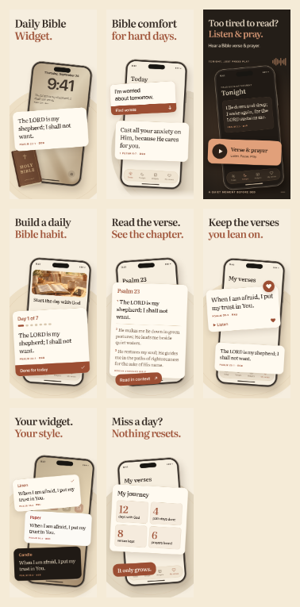

Библия рядом. Каждый день.
Первые три кадра сохранены из одобренного r6. Продолжение: начать, понять, сохранить, настроить и вернуться.
{kind=link}
{kind=link}
{kind=link}
{kind=link}
{kind=link}
{kind=link}
{kind=link}
{kind=link}
Нажмите на кадр, чтобы увеличить. Каждый PNG: 1320 × 2868, RGB. Первые три совпадают с r6 побайтно.
На размере iPhone

Одновременно — три кадра по ширине. На новых кадрах нет мелких маркетинговых подзаголовков и нижних подписей: заголовок и основное действие несут смысл. Первый экран старой тройки сохранён; третий по-прежнему точно соответствует выбранному r3.
У каждого кадра своя задача
- Виджет: стих уже рядом, когда беру телефон.
- Моя тревога: пишу своими словами и получаю библейский стих.
- Вечер: устал читать — слушаю стих и молитву.
- Привычка: начинаю семидневный путь, следую одному дню за раз.
- Понимание: открываю главу вокруг откликнувшегося стиха.
- Мои стихи: сохраняю то, к чему хочется вернуться.
- Мой телефон: выбираю вид виджета на главном экране.
- Возвращение: пропущенный день не обнуляет накопленный прогресс.
Jev: новые кадры 4–8
19 синтетических персон из прежних семи когорт. Модель оценивала точные тексты и описания композиции; сами изображения проверены отдельно. Шкала 0–4: понятность пользы, соответствие потребности и дополнительный повод скачать после первых трёх кадров.
| Кадр | Понятность | Близость потребности | Повод скачать |
|---|---|---|---|
| 4. Начать библейский путь | 3.72 | 2.53 | 1.44 |
| 5. Прочитать главу | 3.62 | 2.34 | 1.31 |
| 6. Сохранить близкий стих | 3.76 | 2.73 | 1.77 |
| 7. Выбрать оформление | 3.20 | 1.85 | 0.91 |
| 8. Вернуться без обнуления | 3.14 | 2.21 | 1.53 |
Сохранение близких стихов — наиболее сильный дополнительный аргумент в этой проверке. Оформление виджетов — более узкая потребность, поэтому оно остаётся в конце серии. Порядок всех восьми кадров не тестировался как эксперимент.
Когорты, уточнение восьмого кадра и ограничения
Близость потребности по когортам (0–4):
| Когорта | 4 · Путь | 5 · Глава | 6 · Сохранение | 7 · Оформление | 8 · Прогресс |
|---|---|---|---|---|---|
| Оформление телефона | 2.72 | 2.57 | 2.88 | 2.14 | 2.35 |
| Ежедневное чтение | 2.86 | 2.60 | 2.97 | 2.19 | 2.43 |
| Тревога / возвращение к вере | 2.84 | 2.65 | 3.15 | 1.95 | 2.53 |
| Католики | 1.84 | 1.71 | 2.07 | 1.18 | 1.67 |
| Только Писание / KJV | 1.65 | 1.45 | 1.99 | 1.24 | 1.57 |
| Подростки | 2.36 | 2.21 | 2.54 | 1.55 | 2.02 |
| Испаноязычные США | 1.71 | 1.40 | 1.76 | 0.91 | 1.36 |
Первоначальный заголовок восьмого кадра «Miss a day? Keep growing» получил понятность 2.60. Его уточнили до «Miss a day? Nothing resets» и повторили только проверку восьмого кадра на тех же 19 персонах: 3.14. Выше показана последняя оценка восьмого кадра; для 4–7 — исходный проход, их тексты и композиции не менялись.
Это гипотезы модели, не интервью и не измеренная конверсия. Вес когорт оценочный. Платная подписка, бесплатные альтернативы и отсутствие нужного языка или перевода учитывались. Повторная оценка после правки не является независимым подтверждением улучшения.
Основано на приложении
Семидневные пути, главы, сохранённые стихи, темы виджетов и накопленный прогресс подтверждены кодом и контентом release-sprint. Обложка утреннего пути взята из приложения. В кадре 7 показаны темы Home Screen; цвет Lock Screen задаёт iOS. Числа в «My journey» — пример личной истории, не статистика пользователей.
Это рекламные композиции интерфейса с увеличенными элементами. Точный результат поиска из кадра 2 и полный пользовательский путь на релизной сборке здесь не проверялись. Первая тройка сохранена без изменений; новые PNG проверены на границы текста и уменьшение, галерея — на мобильной и десктопной ширине.
Тексты и сценарии · Проверка PNG · Предпочтения владельца · Экраны приложения
История
Одобренная тройка r6 и оригинал r3 · r4 / r5 и прежние проверки · Лавры и число стихов